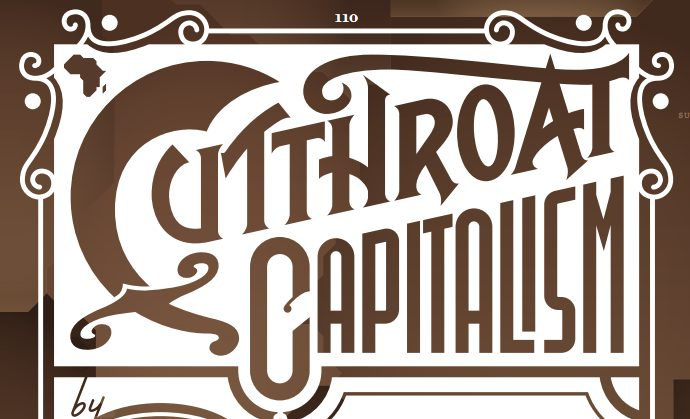

(originally published in Wired)
see the full data-driven story by clicking the link above. This isn’t a story that can be told in words. It has to be seen.
The rough f i s h e r m e n of the so-called somali coast guard are unrepentant criminals, yes, but they’re more than that. they’re innovators. Where earlier sea bandits were satisfied to make off with a dinghy full of booty, pirates who prowl northeast Africa’s gulf of Aden hold captured ships for ransom. this strategy has been fabulously successful: the typical payoff today is 100 times what it was in 2005, and the number of attacks has skyrocketed. ¶ Like any business, somali piracy can be explained in purely economic terms. it flourishes by exploiting the incentives that drive international maritime trade. the other parties involved—shippers, insurers, private security contractors, and numerous national navies—stand to gain more (or at least lose less) by tolerating it than by putting up a serious fight. As for the pirates, their escalating demands are a method of price discovery, a way of gauging how much the market will bear. ¶ the risk-and-reward calculations for the various players arise at key points of tension: at the outset of a shipment, when a vessel comes under attack, during ransom negotiations, and when a deal is struck. As long as national navies don’t roll in with guns blazing, the region’s peculiar economics ensure that most everyone gets a cut. ¶ All of which makes daring rescues, like the liberation in April of the Maersk Alabama’s captain, the exception rather than the rule. such derring-do may become more frequent as public pressure builds to deep-six the brigands. however, the story of the Stolt Valor, captured on september 15, 2008, is more typical. here’s how it played out, along with the cold, hard numbers that have put the somali pirate business model at the center of a growth industry.
Once you’re done reading the story check out the video game that Wired produced to go along with it.